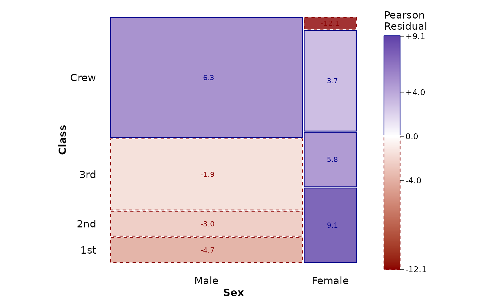

Set the divider, gap size, and model used to calculate expected frequencies for mosaic layers in a plot. A value set directly in a layer takes priority.
Arguments
- divider
A divider function, a character vector naming divider functions, or a list of divider functions.
- offset
A single non-negative number giving the gap at the deepest split. Gaps increase by a factor of 1.5 toward the outermost split.
- expected
The log-linear model used to calculate expected frequencies and Pearson residuals. Supply a formula or one of
"independence","saturated", or"conditional". The conditional model requires one or more variables mapped toconds. SupplyNULLto turn off model fitting, including a model set by an earlier call tomosaic_settings().
Details
The position of mosaic_settings() among the layers in a plot has no
effect. If it is added more than once, the last supplied value for each
setting is used; omitted arguments do not change earlier settings.
Examples
data(titanic)
ggplot(titanic, aes(x = product(Class, Sex))) +
mosaic_settings(
expected = "independence",
divider = c("vspine", "hspine"),
offset = 0.005
) +
geom_mosaic() +
geom_mosaic_text(display_values = "residual") +
scale_fill_residual() +
theme_mosaic()
